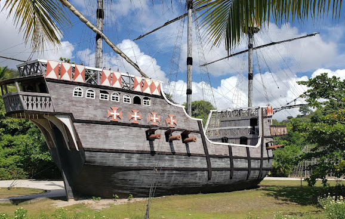

Localização
A réplica da Nau de Cabral é uma atração fascinante localizada na Bahia, que recria a embarcação utilizada por Pedro Álvares em sua viagem histórica ao Brasil em 1500. Essa réplica é uma oportunidade única para os visitantes vivenciarem um pouco da história e compreenderem as condições e desafios enfrentados pelos navegadores naquela época. Ao explorar a nau, os visitantes podem imaginar as jornadas épicas dos primeiros exploradores, mergulhando em um passado distante e conectando-se com as raízes históricas do país.